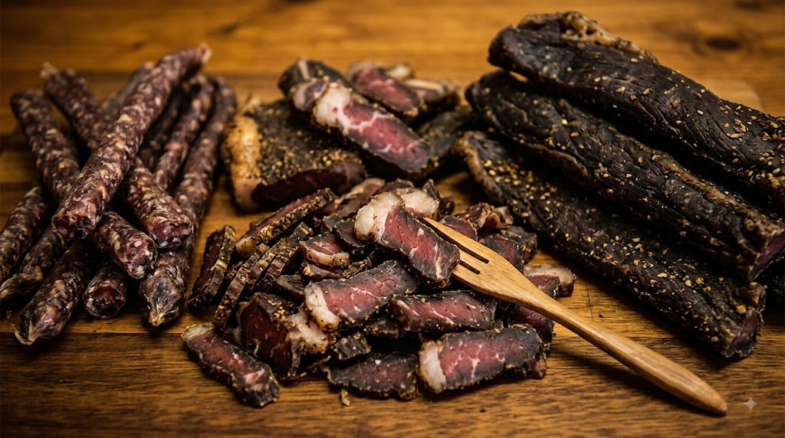

Crumbed Pork Chop

Unbeatable on taste, size, and price!
Price: R 55.00
Flame-Grilled Excellence, Sports & Famous Local Biltong
Google Rating: ★ 4.2 / 5.0 (Based on 213 Reviews)

Enjoy lunch, dinner, or a quick bite in a casual, cosy, and trendy atmosphere. Perfect for solo dining or gathering with groups!
Unbeatable on taste, size, and price!
Price: R 55.00

Choose your custom piece from behind the bar—the best tasting biltong in Alberton.
Price: R 220.00 / kg
Rated 4.2 Stars out of 5 across 213 verified customer reviews!
"They make the best biltong in the world!"
"Their Biltong is the best."